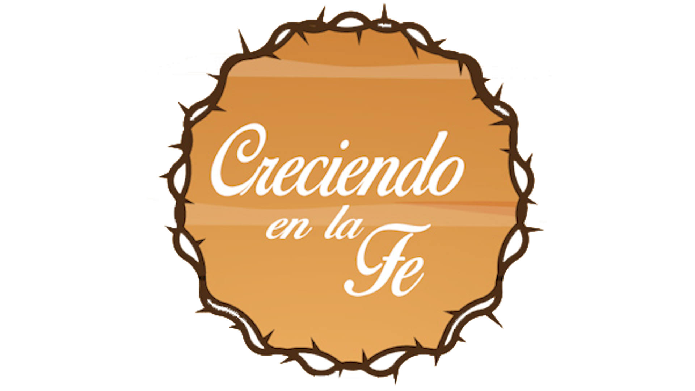
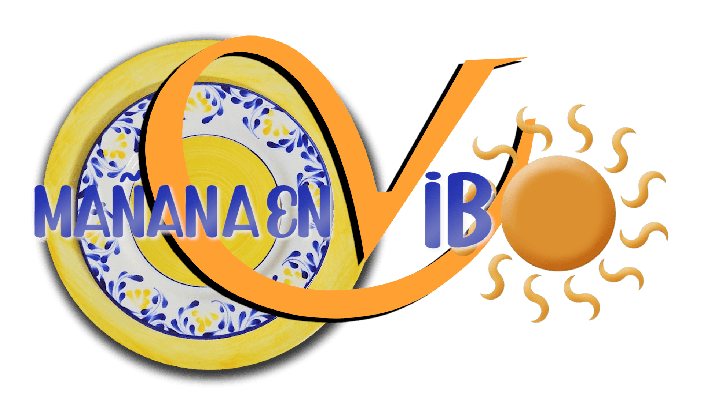
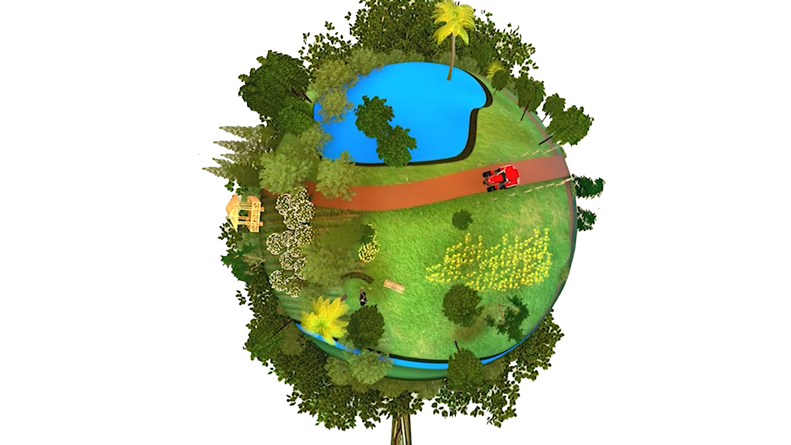
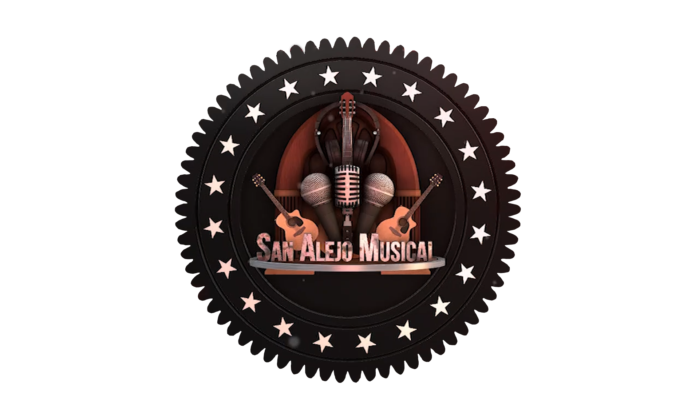
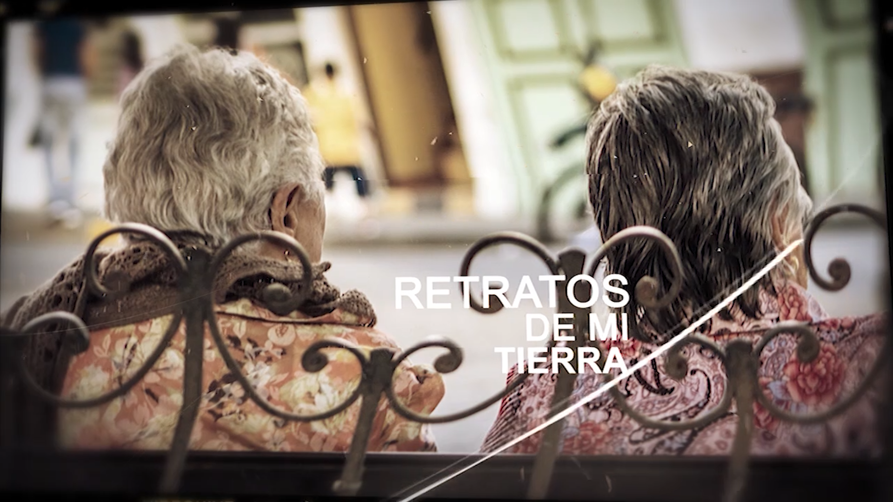
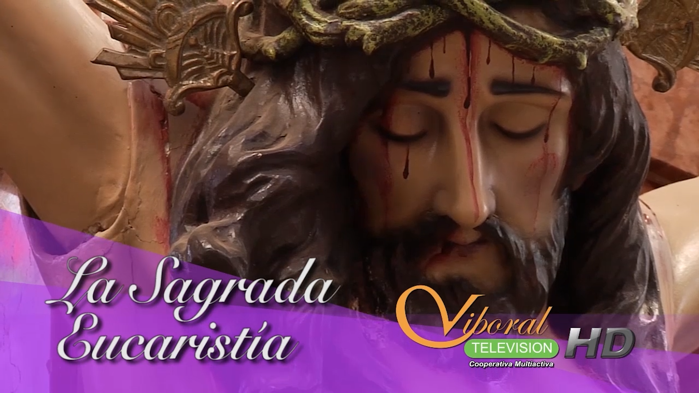

Noticias
Noticiero
Informamos de manera oportuna, veraz y cercana sobre los hechos más relevantes de nuestra comunidad. Un espacio para dar voz a la gente y fortalecer la participación ciudadana.
Ver horarioContenido hecho por y para la comunidad de El Carmen de Viboral
Ver grilla de programaciónInformamos de manera oportuna, veraz y cercana sobre los hechos más relevantes de nuestra comunidad. Un espacio para dar voz a la gente y fortalecer la participación ciudadana.
Ver horario
Un espacio dedicado a fortalecer los valores espirituales y la esperanza en nuestra comunidad, con mensajes inspiradores y reflexiones que acompañan el crecimiento personal.
Ver horario
¡Toda la energía para empezar el día! Alegría, información, buena compañía y lo mejor del entretenimiento para nuestra comunidad. Un programa hecho para ti.
Ver horario
El espacio donde se vive y se siente todo lo del campo. Resalta el trabajo, la tradición y el esfuerzo de nuestra gente rural, conectando la comunidad con sus raíces.
Ver horario
La música popular llega a todos los hogares con alegría, tradición y sentimiento. Canciones que conectan generaciones y nos identifican como comunidad. 🎶
Ver horario
Un espacio de interes donde la comunidad carmelitana podra encontrar de la mano de profesionales opniones, datos, consejos y recomendaciones sobre temas de actualidad del municipio.📖 Ver horario

Un recorrido por cada rincón para mostrar el talento, la cultura y la esencia de nuestra gente, fortaleciendo el orgullo por lo que somos y de dónde venimos. 🌄
Ver horario
Un espacio dedicado al arte, las manualidades y la creatividad de nuestra región. Mostramos el talento local y enseñamos técnicas que enriquecen nuestra cultura.
Ver horarioEl programa donde la música en vivo toma el protagonismo. Artistas locales y regionales se unen para compartir su talento con toda nuestra comunidad. 🎸
Ver horario
Un espacio de opinión donde expertos y líderes locales analizan los temas más relevantes de nuestra comunidad, fomentando el diálogo y la reflexión entre los ciudadanos.
Ver horario
Un programa para los amantes del baile y la música de todos los géneros. Desde salsa hasta reguetón, pasando por cumbia y más, este espacio es para mover el cuerpo y disfrutar de la mejor música. 💃
Ver horario
Un programa de entrevistas donde los protagonistas son los ciudadanos de El Carmen de Viboral. Historias de vida, proyectos y sueños que inspiran a toda la comunidad a seguir adelante.
Ver horarioUn programa de contenido religioso que busca fortalecer la fe y los valores espirituales en nuestra comunidad, ofreciendo mensajes de esperanza, reflexión y crecimiento personal a través de la palabra de Dios.
Ver horario
La Santa Misa desde la iglesia de El Carmen de Viboral, para que toda la comunidad pueda participar y fortalecer su fe desde casa, especialmente aquellos que no pueden asistir presencialmente.
Ver horarioConsulta nuestra grilla completa de programación y no te pierdas ningún programa.
Ver grilla completa